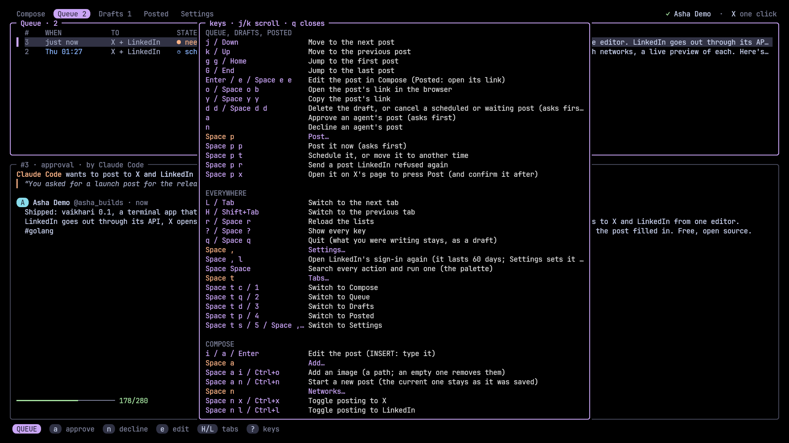
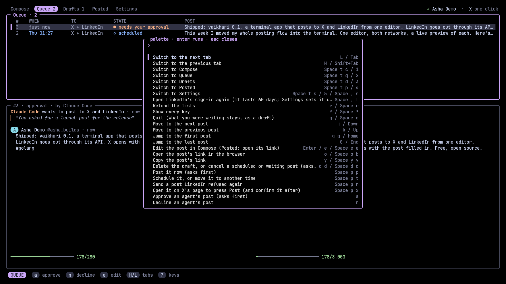

#vyakarana
vyākaraṇa (व्याकरण) is Sanskrit for grammar, literally "taking apart, setting out". This module is the key grammar every Vayu terminal tool shares, so that knowing one tool's keys means knowing the next one's.
It is a Go module for Bubble Tea screens: the tools that use it are pattan, nauka, vaikhari and darshan.


In vaikhari's demo mode: made-up accounts and posts.
#The grammar
- Modes. NORMAL: keys are commands and typing changes nothing (forms open read-only). INSERT: typing goes into the field;
Escgoes back to NORMAL; in a one-line search,Ctrl+j/Ctrl+kstill move the list. VISUAL marks many rows, COMMAND is the:line, where a tool has them. - Direct keys (NORMAL):
j/kmove (5jrepeats),g g/Gthe first / last (5ggthe fifth),Ctrl+d/Ctrl+uhalf a page,H/Lthe previous / next tab,/searches,Enterdoes the main thing,oopens,ycopies,dddeletes,rrefreshes,?shows every key,qquits,Escgoes back one step. Spaceis the leader. After it, the next letter is a group named by the first letter of a verb or a noun; the letter after that is the thing. A box lists what can follow 300 ms afterSpace(a fast typist never sees it); a sequence never times out,Esccancels it,Backspacegoes up a level. These groups mean the same in every tool, and a tool may leave one empty but never use its letter for anything else:
| Keys | Group |
|---|---|
Space Space | the palette: every action of this view, searched |
Space ? | every key of this view |
Space q | close |
Space t | tabs |
Space u | toggles: u f fullscreen, u p preview, u h hidden, u s secrets |
Space y | copy |
Space f | find and filter |
Space s | sort |
Space r | refresh |
Space a | add, new |
Space d | delete (always asks first) |
Space e | edit |
Space o | open outside: o b browser, o e $EDITOR, o t terminal |
Space g | go to a place |
Space m | mark: star, pin, read |
Space , | settings |
Space k | ask the AI |
The letters b c h i j l n p v w x z are free for a tool's own nouns (Space c a container in nauka, Space p a post in vaikhari).
- Safe. Anything that can't be undone asks first, and only
ysays yes:Enterdoesn't, so a secondEntercan't delete. A key that moved says where it went (t moved to Space a t) instead of doing nothing.
#Packages
| Package | What it is |
|---|---|
keymap | Binding (keys, action, verb-first description, view, modes), Keymap, the Engine (counts, sequences, the leader), the reserved groups, the help sheet's sections, and generators for Vayu's keybinding search (scripts/keybindings, scope <tool> <view>:<mode>) and the README's key tables |
mode | NORMAL, INSERT, VISUAL, COMMAND |
popup | the which-key box (WhichAfter, WhichKey), the help sheet (Help), the palette (Palette), the confirm (Confirm, y only), the tmux popup's own key (IsPopupKey), Keys (splits keys typed fast into one at a time) |
ui | the drawing kit: rounded boxes, tabs, key caps, footer, table, colours from varna's theme |
text | kitty's row and column diacritics, for image placeholders |
keymaptest | test helpers: VerbFirst, Reserved, NoPrefixClash, NoDuplicate, All, FileUpToDate, SectionUpToDate |
#Using it
A tool keeps its keys as data and switches on the action names the engine gives back (Bubble Tea models are values, so a binding names its action instead of holding a closure over a stale copy):
var Keys = keymap.New("pattan",
keymap.Common{Noun: "port", Tabs: true, Search: "Search the ports", Refresh: "Rescan the ports"}.Binds(),
[]keymap.Binding{
{Seq: "d d", Alt: []string{"Space d s"}, Act: "stop", Desc: "Stop the server (asks first)", Where: "ports"},
{Seq: "Space a t", Act: "share", Desc: "Start a tunnel to the port", Where: "ports"},
{Seq: "t", Moved: "Space a t", Where: "ports"},
}).Where("ports", "On a port")
// in the model
r := m.eng.Feed(msg.String(), m.where()) // per key of popup.Keys(msg)
switch {
case !r.Handled: // INSERT: the key is the text field's
case r.Pending:
return m, popup.WhichAfter(r.Gen)
case r.Message() != "":
m.say(r.Message())
case r.Act != "":
return m.run(r.Act, r.Count, r.Counted)
}and in its tests:
func TestKeys(t *testing.T) {
keymaptest.All(t, Keys)
keymaptest.FileUpToDate(t, "../../scripts/keybindings", Keys.KeybindingsFile("Tmux", "go test ./internal/tui -update"), *update)
keymaptest.SectionUpToDate(t, "../../README.md", Keys.Markdown(), *update)
}#License
MIT